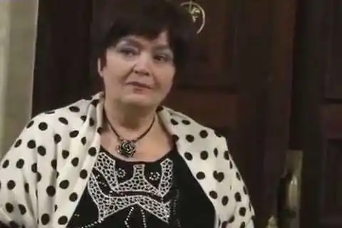

Світлана Андріївна Йовенко народилася 20 вересня 1945, Київ. Українська поетеса та прозаїк, публіцист і перекладач; Заслужений працівник культури України; завідувач відділу поезії та критики журналу "Вітчизна". Лауреат премії ім. Леоніда Вишеславського "Планета поета" (2010).
Світлана Йовенко у 1968 р. закінчила з відзнакою філологічний факультет Київського державного університету ім. Т. Г. Шевченка та аспірантуру при кафедрі слов'янської філології.
Працювала редакторкою поезії та драматургії у вид-ві "Дніпро"; від 1977 — у редакції журналу "Вітчизна" (від 1993 — зав. відділу поезії та критики). Померла 7 листопада 2021 року в реанімації ковідного відділення 10-ї лікарні м. Києва.